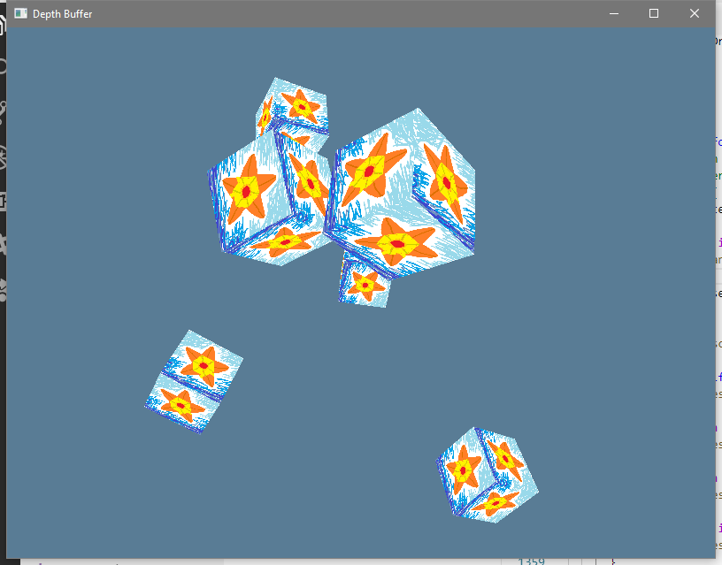

Depth Buffer
Alright well we're getting close to having all the basics covered but our cubes are all wrong when they're different distances. Later cubes overdraw earlier cubes even if they're farther away. That's not how things should go!
We have to activate a part of the drawing pipeline called the "Depth Buffer". It's basically what it sounds like. In addition to recording one color value per fragment, there's also now going to be a depth value per fragment. If any later primitive (from the same draw call or a future draw call) would write to a fragment's color, the depth buffer is checked. If it "passes" the check (we'll see what that means in a moment) then the new depth value is recorded and the new color value is recorded.
A DepthImage Type
As you might imagine by now, if we're doing stuff with memory we gotta get that memory from somewhere. The color image got allocated for us "automatically" as part of us getting a backbuffer, but we don't get depth images for free.
By now we're a little more comfortable with things than we were at the start so
let jump straight to having all the parts of this bundled together. This is
really close to how LoadedImage works, but no Sampler.
# #![allow(unused_variables)] #fn main() { /// Parts for a depth buffer image pub struct DepthImage<B: Backend, D: Device<B>> { pub image: ManuallyDrop<B::Image>, pub requirements: Requirements, pub memory: ManuallyDrop<B::Memory>, pub image_view: ManuallyDrop<B::ImageView>, pub phantom: PhantomData<D>, } #}
And we have a method to make one of these things as well as a method to clean it up. There's not much that's surprising here. We pretty much use the same code as before and any place we see "color" we replace it with "depth" instead. If we had the time we could possibly make some sort of complicated thing where there's just one AbstractImage that we use most of the time and then a LoadedImage holds an AbstractImage plus a Sampler and all that... but I honestly just don't think it's worth the effort to bother with all that layering complication.
Note: in the following code the DepthImage uses device local memory (since the
memory is used very actively in the graphics pipeline process), but in other
situations you might care to try and find some memory that's both device local
and also cpu visible (depending on exactly how you use the DepthImage). Most
graphics cards have at least some memory like that. As with other things in
gfx-hal, it always comes down to customizing every part of what's going on
based on exactly what you're trying to achieve.
# #![allow(unused_variables)] #fn main() { impl<B: Backend, D: Device<B>> DepthImage<B, D> { pub fn new(adapter: &Adapter<B>, device: &D, extent: Extent2D) -> Result<Self, &'static str> { unsafe { let mut the_image = device .create_image( gfx_hal::image::Kind::D2(extent.width, extent.height, 1, 1), 1, Format::D32Float, gfx_hal::image::Tiling::Optimal, gfx_hal::image::Usage::DEPTH_STENCIL_ATTACHMENT, gfx_hal::image::ViewCapabilities::empty(), ) .map_err(|_| "Couldn't crate the image!")?; let requirements = device.get_image_requirements(&the_image); let memory_type_id = adapter .physical_device .memory_properties() .memory_types .iter() .enumerate() .find(|&(id, memory_type)| { // BIG NOTE: THIS IS DEVICE LOCAL NOT CPU VISIBLE requirements.type_mask & (1 << id) != 0 && memory_type.properties.contains(Properties::DEVICE_LOCAL) }) .map(|(id, _)| MemoryTypeId(id)) .ok_or("Couldn't find a memory type to support the image!")?; let memory = device .allocate_memory(memory_type_id, requirements.size) .map_err(|_| "Couldn't allocate image memory!")?; device .bind_image_memory(&memory, 0, &mut the_image) .map_err(|_| "Couldn't bind the image memory!")?; let image_view = device .create_image_view( &the_image, gfx_hal::image::ViewKind::D2, Format::D32Float, gfx_hal::format::Swizzle::NO, SubresourceRange { aspects: Aspects::DEPTH, levels: 0..1, layers: 0..1, }, ) .map_err(|_| "Couldn't create the image view!")?; Ok(Self { image: ManuallyDrop::new(the_image), requirements, memory: ManuallyDrop::new(memory), image_view: ManuallyDrop::new(image_view), phantom: PhantomData, }) } } pub unsafe fn manually_drop(&self, device: &D) { use core::ptr::read; device.destroy_image_view(ManuallyDrop::into_inner(read(&self.image_view))); device.destroy_image(ManuallyDrop::into_inner(read(&self.image))); device.free_memory(ManuallyDrop::into_inner(read(&self.memory))); } } #}
Update the render pass
We're adding a bit to the render pass creation.
New Depth Attachment
# #![allow(unused_variables)] #fn main() { let depth_attachment = Attachment { format: Some(Format::D32Float), samples: 1, ops: AttachmentOps { load: AttachmentLoadOp::Clear, store: AttachmentStoreOp::DontCare, }, stencil_ops: AttachmentOps::DONT_CARE, layouts: Layout::Undefined..Layout::DepthStencilAttachmentOptimal, }; #}
This is similar to the color attachment.
- With the depth attachment we don't use the format that the GPU and surface
negotiated, that's just for the color data. Instead we use the format that we
specify during the
DepthImagecreation. ops.storecan be changed toDontCarebecause we don't care what happens after the full render pass completes. You could store it and check it later, and there are good uses for that, but we really don't care right now.- Instead of our
layoutsgoing fromUndefinedtoPresentit goes toDepthStencilAttachmentOptimal, which should sound familiar by now. That's the depth version of theColorAttachmentOptimalwe're already using.
Update SubpassDesc
We add a new ID and layout to the subpass
# #![allow(unused_variables)] #fn main() { let subpass = SubpassDesc { colors: &[(0, Layout::ColorAttachmentOptimal)], depth_stencil: Some(&(1, Layout::DepthStencilAttachmentOptimal)), inputs: &[], resolves: &[], preserves: &[], }; #}
Add Subpass Dependencies
Now we're going to specify two SubpassDependency values. One for "in" and one for "out". In our case they're basically a mirror of each other, but if you had more passes then it'd get more intricate. Right now our data just flows from the "External" world, into our lone subpass, and then right back out into the External world.
We didn't have to talk about this stuff before because there is an implicit subpass dependency that happens if you don't specify one yourself. However, it's a little conservative about when the pipeline can start and stop (as default definitions often should be), and it doesn't enable a neat flag that we want.
There's a flag you can enable for Early Fragment Test Mode. This does the depth test (and some other tests) before the fragment shader runs instead of after. This can potentially be quite a boost if you have a complicated fragment shader that the depth buffer or other test will just cull anyway. However, there are edge cases where you might not want it, so be sure to read that page for the specifics. Our fragment shader isn't super fancy, so we'll just do the early tests. Not that the speed boost really matters either since we're also well under 16ms per frame either way, but it's the spirit of the thing.
# #![allow(unused_variables)] #fn main() { let in_dependency = SubpassDependency { passes: SubpassRef::External..SubpassRef::Pass(0), stages: PipelineStage::COLOR_ATTACHMENT_OUTPUT ..PipelineStage::COLOR_ATTACHMENT_OUTPUT | PipelineStage::EARLY_FRAGMENT_TESTS, accesses: ImageAccess::empty() ..(ImageAccess::COLOR_ATTACHMENT_READ | ImageAccess::COLOR_ATTACHMENT_WRITE | ImageAccess::DEPTH_STENCIL_ATTACHMENT_READ | ImageAccess::DEPTH_STENCIL_ATTACHMENT_WRITE), }; let out_dependency = SubpassDependency { passes: SubpassRef::Pass(0)..SubpassRef::External, stages: PipelineStage::COLOR_ATTACHMENT_OUTPUT | PipelineStage::EARLY_FRAGMENT_TESTS ..PipelineStage::COLOR_ATTACHMENT_OUTPUT, accesses: (ImageAccess::COLOR_ATTACHMENT_READ | ImageAccess::COLOR_ATTACHMENT_WRITE | ImageAccess::DEPTH_STENCIL_ATTACHMENT_READ | ImageAccess::DEPTH_STENCIL_ATTACHMENT_WRITE)..ImageAccess::empty(), }; #}
Update create_render_pass
We just change the call to incorporate the new values:
# #![allow(unused_variables)] #fn main() { unsafe { device .create_render_pass( &[color_attachment, depth_attachment], &[subpass], &[in_dependency, out_dependency], ) .map_err(|_| "Couldn't create a render pass!")? } #}
Update the depth_stencil
Where we have our descriptor sets and all that we need a new depth_stencil
definition in the create_pipeline function:
# #![allow(unused_variables)] #fn main() { let depth_stencil = DepthStencilDesc { depth: DepthTest::On { fun: gfx_hal::pso::Comparison::LessEqual, write: true, }, depth_bounds: false, stencil: StencilTest::Off, }; #}
Remember how I said that the depth buffer uses "a test"? Well we get limited control over what test operation to use. In this case, we're saying that if the new fragment's depth value is less than or equal to the old depth value (aka, if the new fragment is closer or as close as the previous one) we write the new fragment's data into the depth image and color image.
Update the drawing
The draw_clear_frame method doesn't need a change. Since there's nothing that
really gets drawn we don't even have to specify a clear depth. However,
draw_cubes_frame has some stuff to draw so we need to give it a clear depth
value as well as a clear color value.
# #![allow(unused_variables)] #fn main() { const QUAD_CLEAR: [ClearValue; 2] = [ ClearValue::Color(ClearColor::Float([0.1, 0.2, 0.3, 1.0])), ClearValue::DepthStencil(ClearDepthStencil(1.0, 0)), ]; #}
And, whoops, I guess that should be renamed to CUBE_CLEAR now.
Update HalState itself
Finally, we need to add some depth images to our HalState
# #![allow(unused_variables)] #fn main() { depth_images: Vec<DepthImage<back::Backend, back::Device>>, #}
And then we adjust how we make our Framebuffer values. We already have the color image views (which are views into the backbuffer images), but we also need to incorporate the depth image views as well.
# #![allow(unused_variables)] #fn main() { // Create The ImageViews let (image_views, depth_images, framebuffers) = match backbuffer { Backbuffer::Images(images) => { let image_views = images .into_iter() .map(|image| unsafe { device .create_image_view( &image, ViewKind::D2, format, Swizzle::NO, SubresourceRange { aspects: Aspects::COLOR, levels: 0..1, layers: 0..1, }, ) .map_err(|_| "Couldn't create the image_view for the image!") }) .collect::<Result<Vec<_>, &str>>()?; let depth_images = image_views .iter() .map(|_| DepthImage::new(&adapter, &device, extent)) .collect::<Result<Vec<_>, &str>>()?; let image_extent = gfx_hal::image::Extent { width: extent.width as _, height: extent.height as _, depth: 1, }; let framebuffers = image_views .iter() .zip(depth_images.iter()) .map(|(view, depth_image)| unsafe { let attachments: ArrayVec<[_; 2]> = [view, &depth_image.image_view].into(); device .create_framebuffer(&render_pass, attachments, image_extent) .map_err(|_| "Couldn't crate the framebuffer!") }) .collect::<Result<Vec<_>, &str>>()?; (image_views, depth_images, framebuffers) } Backbuffer::Framebuffer(_) => unimplemented!("Can't handle framebuffer backbuffer!"), }; #}
And finally, in Drop for HalState we have to clean up our DepthImage
values the same as we clean up the other stuff in each vec.
# #![allow(unused_variables)] #fn main() { for depth_image in self.depth_images.drain(..) { depth_image.manually_drop(&self.device); } #}
Done!
We're already done! That was the whole thing! One of the shortest lessons yet, but quite useful to be able to do.

As always, this example's code can be viewed in the examples directory.